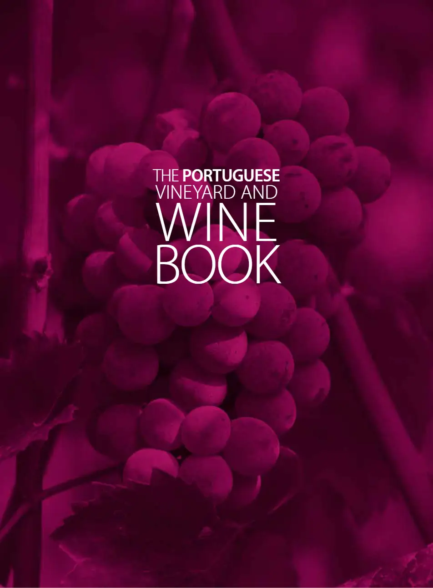
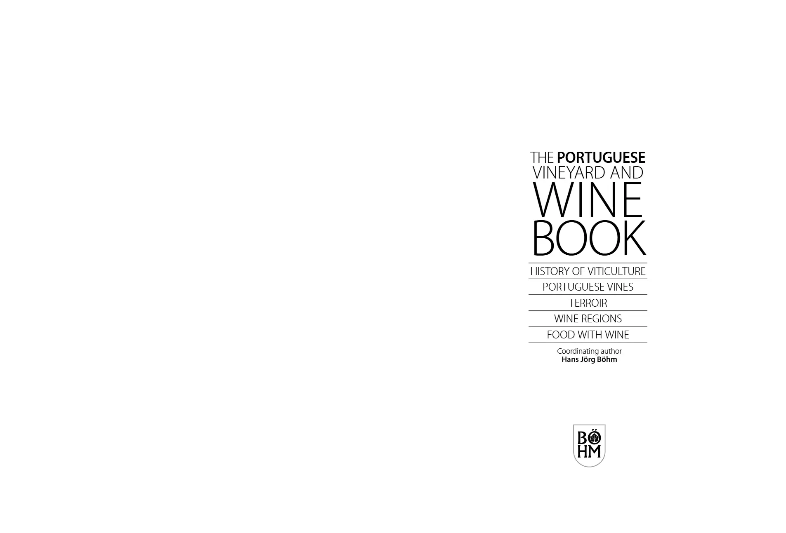
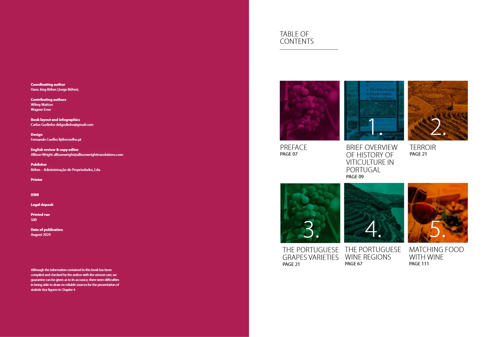
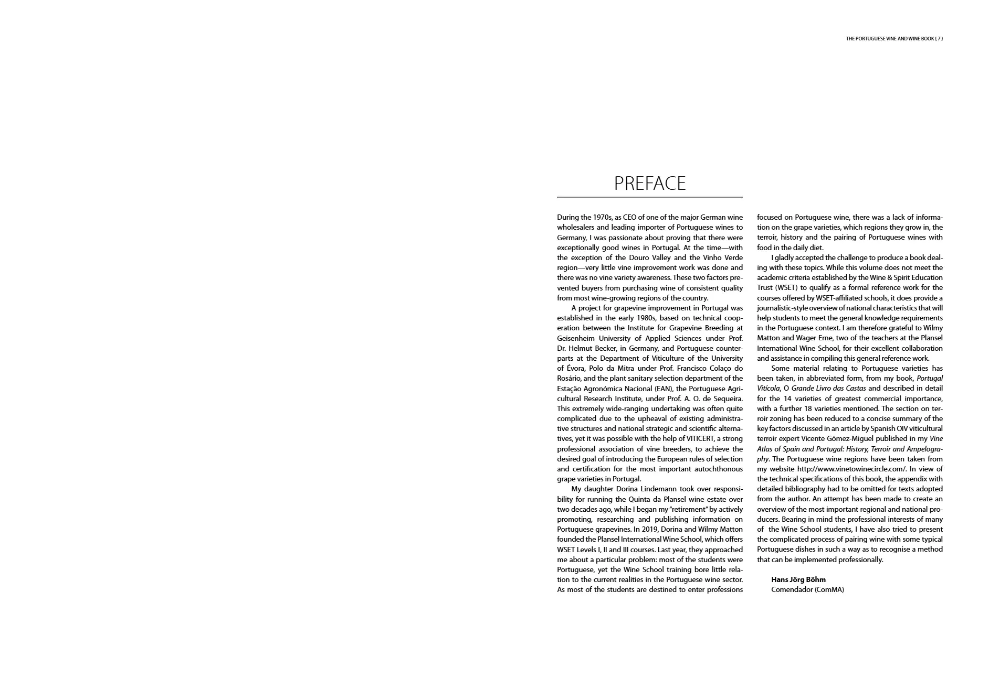

Preface · The Portuguese Vineyard and Wine Book
The Portuguese Vineyard and Wine Book
Coordinating author: Hans Jörg (Jorge) Böhm. Contributing authors: Wilmy Matton and Wagner Erne. Published in August 2024 by Böhm – Administração de Propriedades, Lda., print run 500 copies.
History of viticulture, Portuguese vines, terroir, wine regions and food with wine. Every double page can be enlarged with a click; the text of each page is printed below it.
- Chapter 1Brief overview of the history of viticulture in Portugalfrom page 8
- Chapter 2Terroirfrom page 22
- Chapter 3The Portuguese grape varietiesfrom page 30
- Chapter 4The Portuguese wine regionsfrom page 66
- Chapter 5Matching food with winefrom page 110

Text · Cover
THE PORTUGUESE VINEYARD AND WINE BOOK

Text · Pages 2–3
THE PORTUGUESE VINEYARD AND WINE BOOK HISTORY OF VITICULTURE PORTUGUESE VINES TERROIR WINE REGIONS FOOD WITH WINE Coordinating author Hans Jörg Böhm

Text · Pages 4–5
Coordinating author Hans Jörg Böhm (Jorge Böhm). Contributing authors Wilmy Matton Wagner Erne Book layout and infographics Carlos Godinho delgodinho@gmail.com Design Fernando Coelho f@fercoelho.pt English revisor & copy editor Allison Wright allisonwright@allisonwrighttranslations.com Publisher Böhm – Administração de Propriedades, Lda. Printer ISBN Legal deposit Printed run 500 Date of publication August 2024 Although the information contained in this book has been compiled and checked by the author with the utmost care, no guarantee can be given as to its accuracy, there were difficulties in being able to draw on reliable sources for the presentation of statistic Key figures in Chapter 4
TABLE OF CONTENTS
PREFACE PAGE 07
1. BRIEF OVERVIEW OF HISTORY OF VITICULTURE IN PORTUGAL PAGE 09
2. TERROIR PAGE 21
3. 4. 5.
THE PORTUGUESE THE PORTUGUESE MATCHING FOOD
GRAPES VARIETIES WINE REGIONS WITH WINE
PAGE 21
PAGE 67
PAGE 111

Text · Pages 6–7
PREFACE
During the 1970s, as CEO of one of the major German wine wholesalers and leading importer of Portuguese wines to Germany, I was passionate about proving that there were exceptionally good wines in Portugal. At the time—with the exception of the Douro Valley and the Vinho Verde region—very little vine improvement work was done and there was no vine variety awareness. These two factors prevented buyers from purchasing wine of consistent quality from most wine-growing regions of the country. A project for grapevine improvement in Portugal was established in the early 1980s, based on technical cooperation between the Institute for Grapevine Breeding at Geisenheim University of Applied Sciences under Prof. Dr. Helmut Becker, in Germany, and Portuguese counterparts at the Department of Viticulture of the University of Évora, Polo da Mitra under Prof. Francisco Colaço do Rosário, and the plant sanitary selection department of the Estação Agronómica Nacional (EAN), the Portuguese Agricultural Research Institute, under Prof. A. O. de Sequeira. This extremely wide-ranging undertaking was often quite complicated due to the upheaval of existing administrative structures and national strategic and scientific alternatives, yet it was possible with the help of VITICERT, a strong professional association of vine breeders, to achieve the desired goal of introducing the European rules of selection and certification for the most important autochthonous grape varieties in Portugal. My daughter Dorina Lindemann took over responsibility for running the Quinta da Plansel wine estate over two decades ago, while I began my “retirement” by actively promoting, researching and publishing information on Portuguese grapevines. In 2019, Dorina and Wilmy Matton founded the Plansel International Wine School, which offers WSET Levels I, II and III courses. Last year, they approached me about a particular problem: most of the students were Portuguese, yet the Wine School training bore little relation to the current realities in the Portuguese wine sector. As most of the students are destined to enter professions
focused on Portuguese wine, there was a lack of information on the grape varieties, which regions they grow in, the terroir, history and the pairing of Portuguese wines with food in the daily diet. I gladly accepted the challenge to produce a book dealing with these topics. While this volume does not meet the academic criteria established by the Wine & Spirit Education Trust (WSET) to qualify as a formal reference work for the courses offered by WSET-affiliated schools, it does provide a journalistic-style overview of national characteristics that will help students to meet the general knowledge requirements in the Portuguese context. I am therefore grateful to Wilmy Matton and Wager Erne, two of the teachers at the Plansel International Wine School, for their excellent collaboration and assistance in compiling this general reference work. Some material relating to Portuguese varieties has been taken, in abbreviated form, from my book, Portugal Vitícola, O Grande Livro das Castas and described in detail for the 14 varieties of greatest commercial importance, with a further 18 varieties mentioned. The section on terroir zoning has been reduced to a concise summary of the key factors discussed in an article by Spanish OIV viticultural terroir expert Vicente Gómez-Miguel published in my Vine Atlas of Spain and Portugal: History, Terroir and Ampelography. The Portuguese wine regions have been taken from my website http://www.vinetowinecircle.com/. In view of the technical specifications of this book, the appendix with detailed bibliography had to be omitted for texts adopted from the author. An attempt has been made to create an overview of the most important regional and national producers. Bearing in mind the professional interests of many of the Wine School students, I have also tried to present the complicated process of pairing wine with some typical Portuguese dishes in such a way as to recognise a method that can be implemented professionally. Hans Jörg Böhm Comendador (ComMA)